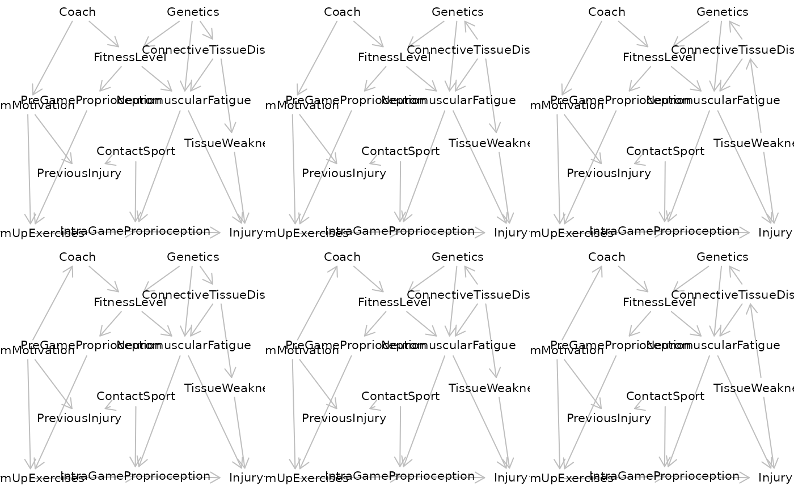

equivalenceClass(x) generates a complete partially directed acyclic graph
(CPDAG) from an input DAG x. The CPDAG represents all graphs that are Markov
equivalent to x: undirected
edges in the CPDAG can be oriented either way, as long as this does not create a cycle
or a new v-structure (a sugraph a -> m <- b, where a and b are not adjacent).
Details
equivalentDAGs(x,n) enumerates at most n DAGs that are Markov equivalent
to the input DAG or CPDAG x.
Examples
# How many equivalent DAGs are there for the sports DAG example?
g <- getExample("Shrier")
length(equivalentDAGs(g))
#> [1] 6
# Plot all equivalent DAGs
par( mfrow=c(2,3) )
lapply( equivalentDAGs(g), plot )

#> [[1]]
#> [[1]]$mar
#> [1] 0 0 0 0
#>
#>
#> [[2]]
#> [[2]]$mar
#> [1] 0 0 0 0
#>
#>
#> [[3]]
#> [[3]]$mar
#> [1] 0 0 0 0
#>
#>
#> [[4]]
#> [[4]]$mar
#> [1] 0 0 0 0
#>
#>
#> [[5]]
#> [[5]]$mar
#> [1] 0 0 0 0
#>
#>
#> [[6]]
#> [[6]]$mar
#> [1] 0 0 0 0
#>
#>
# How many edges can be reversed without changing the equivalence class?
sum(edges(equivalenceClass(g))$e == "--")
#> [1] 3